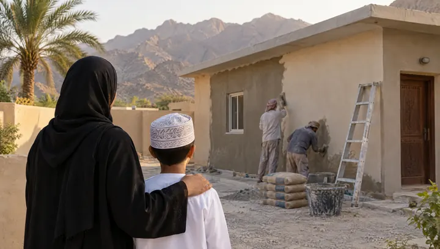

لماذا الترميم؟
لأن الأمان يبدأ من البيت
بدأت جمعية بهجة أعمال صيانة وترميم منازل الأيتام بعد الحالة المدارية إعصار مكونو عام 2018، حيث قام فريق مختص بزيارة المنازل وتسجيل الحالات وتقييم احتياجات الصيانة والترميم.
ومنذ ذلك الوقت، تستمر أعمال الصيانة والترميم على مدار العام، وتزداد وتيرتها عند تأثر السلطنة بالأنواء المناخية.
كل منزل له احتياجه. وكل أسرة لها قصتها. وكل مساهمة قد تكون سببًا في تغيير شيءٍ مهم في حياة أسرة.
ترميم منازل الأيتام والأرامل ليس مجرد إصلاح لـ"خرسانة"، بل هو أمان لقلوبهم.من إعلان الجمعية لحملة ترميم 10 منازل أرامل وأيتام – مارس 2026
المصدر: الملف التعريفي لجمعية بهجة (أعمال الصيانة والترميم) وإعلان الحملة الرسمي